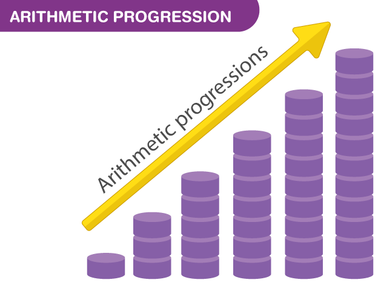

Arithmetic Progression (AP)
Arithmetic Progression (AP)
is a sequence of numbers in order, in which the difference between
any two consecutive numbers is a constant value. It is also called
Arithmetic Sequence. For example, the series of natural numbers: 1,
2, 3, 4, 5, 6,… is an Arithmetic Progression, which has a common
difference between two successive terms (say 1 and 2) equal to 1 (2
-1). Even in the case of odd numbers and even numbers, we can see
the common difference between two successive terms will be equal to
2.
If we observe in our regular lives, we come across Arithmetic
progression quite often. For example, Roll numbers of students in a
class, days in a week or months in a year. This pattern of series
and sequences has been generalized in Maths as progressions.
What is a Arithmetic Progression?
In mathematics, there are three different types of progressions. They are:
- Arithmetic Progression (AP)
- Geometric Progression (GP)
- Harmonic Progression (HP)
A progression is a special type of sequence for which it is possible
to obtain a formula for the nth term. The Arithmetic Progression is
the most commonly used sequence in maths with easy to understand
formulas.
Definition 1: A mathematical
sequence in which the difference between two consecutive terms is
always a constant and it is abbreviated as AP.
Definition 2: An arithmetic
sequence or progression is defined as a sequence of numbers in which
for every pair of consecutive terms, the second number is obtained
by adding a fixed number to the first one.
The fixed number that must be added to any term of an AP to get the
next term is known as the common difference of the AP. Now, let us
consider the sequence, 1, 4, 7, 10, 13, 16,… It is considered as an
arithmetic sequence (progression) with a common difference 3.

Notation in Arithmetic Progression
In AP, we will come across some main terms, which are denoted as:
- First term (a)
- Common difference (d)
- nth Term (an)
- Sum of the first n terms (Sn)
All three terms represent the property of Arithmetic Progression. We will learn more about these three properties in the next section.
First Term of AP
The AP can also be written in terms of common differences, as follows;
where “a” is the first term of the progression.
Common Difference in Arithmetic Progression
In this progression, for a given series, the terms used are the first term, the common difference and nth term. Suppose, a1, a2, a3, ……………., an is an AP, then; the common difference “ d ” can be obtained as;
Where “d” is a common difference. It can be positive, negative or zero.
Arithmetic Progression Formulas
There are two major formulas we come across when we learn about Arithmetic Progression, which is related to:
- The nth term of AP
- Sum of the first n terms
Let us learn here both the formulas with examples.
nth Term of an AP
The formula for finding the n-th term of an AP is:
Where
a = First term
d = Common difference
n = number of terms
an = nth term
Solved Example
Find the nth term of AP: 1, 2, 3, 4, 5…., an, if the number of terms
are 15.
Solution:
Given, AP: 1, 2, 3, 4, 5…., an
n=15
By the formula we know, an = a+(n-1)d
First-term, a =1
Common difference, d=2-1 =1
Therefore, an = a15 = 1+(15-1)1 = 1+14 = 15
Note: The behaviour of the
sequence depends on the value of a common difference.
- If the value of “d” is positive, then the member terms will grow towards positive infinity
- If the value of “d” is negative, then the member terms grow towards negative infinity
Sum of N Terms of AP
For an AP, the sum of the first n terms can be calculated if the
first term, common difference and the total terms are known. The
formula for the arithmetic progression sum is explained below:
Consider an AP consisting “n” terms.
This is the AP sum formula to find the sum of n terms in series.
Solved Example
Let us take the example of adding natural numbers up to 15 numbers.
AP = 1, 2, 3, 4, 5, 6, 7, 8, 9, 10, 11, 12, 13, 14, 15
Given, a = 1, d = 2-1 = 1 and an = 15
Now, by the formula we know;
Sn = n/2[2a + (n − 1) × d]
S15 = 15/2[2.1+(15-1).1]
= 15/2[2+14]
= 15/2 [16]
= 15 x 8
= 120
Hence, the sum of the first 15 natural numbers is 120.
Sum of AP when the Last Term is Given
Formula to find the sum of AP when first and last terms are given as follows:
List of Arithmetic Progression Formulas
The list of formulas is given in a tabular form used in AP. These formulas are useful to solve problems based on the series and sequence concept.
| General Form of AP | a, a + d, a + 2d, a + 3d, . . . |
| The nth term of AP | an = a + (n – 1) × d |
| Sum of n terms in AP | S = n/2[2a + (n − 1) × d] |
| Sum of all terms in a finite AP with the last term as ‘l’ | n/2(a + l) |
Arithmetic Progressions Solved Examples
Example 1: Find the value of n, if a = 10, d = 5, an = 95.
Solution:
Given, a = 10, d = 5, an = 95
From the formula of general term, we have:
an = a + (n − 1) × d
95 = 10 + (n − 1) × 5
(n − 1) × 5 = 95 – 10 = 85
(n − 1) = 85/ 5
(n − 1) = 17
n = 17 + 1
n = 18
Example 2: Find the 20th term for the given AP:3, 5, 7, 9, ……
Solution:
Given,
3, 5, 7, 9, ……
a = 3, d = 5 – 3 = 2, n = 20
an = a + (n − 1) × d
a20 = 3 + (20 − 1) × 2
a20 = 3 + 38
⇒a20 = 41
Example 3: Find the sum of the first 30 multiples of 4.
Solution:
The first 30 multiples of 4 are: 4, 8, 12, ….., 120
Here, a = 4, n = 30, d = 4
We know, S30 = n/2 [2a + (n − 1) × d]
S30 = 30/2[2 (4) + (30 − 1) × 4]
S30 = 15[8 + 116]
S30 = 1860
Example 4: Find a formula for the nth term of the AP 12, 5, -2...
Solution:
a = 12, d = 5
Then
Tn = a + (n - 1)d
Tn = 12 + (n - 1)(-7)
Tn = 12 -7n + 7
Tn = 19 - 7n
Example 5: The 6th and 13th of an AP are 0 and
14 respectively. Find the first four terms of the AP
Solution:
Tn = a + (n - 1)d
:. T6 = a + 5d = 0 ....(i)
T13 = a + 12d = 14 ....(ii)
Subtract (i) from (ii)
7d = 14
Divide both sides by the coefficient of d (i.e 7)
:. d = 2
Put d = 2 into (i), we have
a + 5(2) = 0
a + 10 = 0
Subtract 10 from both sides
a + 10 - 10 = 0 - 10
a = - 10
Therefore;
First term, a = -10
Second term, T2 = -10 + 2 = -8
Third term, T3 = -10 + 2(2) = -10 + 4 = -6
Fouth term, T4 = -10 + 3(2) = -10 + 6 = -4
Practice Problems on AP
1. Find the 10th term of an arithmetic progression if the first term
is 3 and the common difference is 2.
2. Calculate the sum of the first 8 terms of an arithmetic
progression with a first term of 5 and a common difference of 3.
3. Determine the common difference of an arithmetic progression if
the sum of the first 5 terms is 390 and the first term is 2.
4. Find the first term of an arithmetic progression if the sum of
the first 6 terms is 546 and the common difference is 4.
5. Calculate the sum of an infinite arithmetic progression with a
first term of 3 and a common difference of 2.
6. Determine the 15th term of an arithmetic progression if the first
term is 4 and the sum of the first 10 terms is 4092.
7. Find the common difference of an arithmetic progression if the
sum of the first 7 terms is 620 and the first term is 5.
8. Calculate the sum of the first 12 terms of an arithmetic
progression with a first term of 6 and a common difference of 3.
9. Determine the first term of an arithmetic progression if the sum
of the first 9 terms is 1536 and the common difference is 2.
10. Find the common difference of an arithmetic progression if the
sum of the first 4 terms is 93 and the first term is 3.
11. Calculate the sum of an infinite arithmetic progression with a
first term of 2 and a common difference of 5.
12. Determine the 20th term of an arithmetic progression if the
first term is 7 and the sum of the first 15 terms is 32766.
13. Find the first term of an arithmetic progression if the sum of
the first 8 terms is 1020 and the common difference is 3.
14. Calculate the sum of the first 11 terms of an arithmetic
progression with a first term of 8 and a common difference of 4.
15. Determine the common difference of an arithmetic progression if
the sum of the first 6 terms is 364 and the first term is 2.
16. Find the 25th term of an arithmetic progression if the first
term is 10 and the sum of the first 20 terms is 20470.
17. Calculate the sum of an infinite arithmetic progression with a
first term of 6 and a common difference of 3.
18. Determine the first term of an arithmetic progression if the sum
of the first 10 terms is 4096 and the common difference is 4.
19. Find the common difference of an arithmetic progression if the
sum of the first 15 terms is 32760 and the first term is 8.
20. Calculate the sum of the first 18 terms of an arithmetic
progression with a first term of 12 and a common difference of 2.
21. Find the an and 10th term of the progression: 3, 1,
17, 24, ……
22. If a = 2, d = 3 and n = 90. Find an and
Sn.
23. The 7th term and 10th terms of an AP are 12 and 25. Find the
12th term. 24. The 7th term of an arithmetic progression is -39/12
and the 15th term is -103/12. What is the 27th term?
A. -187/12
B. -191/12
C. -199/12
D. -205/12
25. In an arithmetic progression, the ratio of the 7th term to the
10th term is -1. If the 16th term is -15, what is the 3rd term?
A. 11
B. 13
C. -11
D. -13
26. In an arithmetic progression, the sum of the first 3 terms is
-36 and that of the last 3 is 27. If there are 10 terms, what are
the 1st term and the common difference respectively?
A. 15, 3
B. -15, 3
C. 15, -3
D. -15, -3
27. In an arithmetic progression, the sum of the first 3 terms is
-60 and that of the last 3 is 84. If there are 15 terms, what is the
sum of the middle 3 terms?
A. 8
B. 12
C. 16
D. 24
28. In an arithmetic progression of 21 terms, the sum of the first 3
terms is -33 and that of the middle 3 is 75. What is the sum of the
arithmetic progression?
A. -955
B. -1155
C. 525
D. 715
29. If the sixth term of an Arithmetic Progression (A.P) is 37 and
the sum of the first six terms is 148, find the first term and the
common difference.
30. The sum of the first n terms of the arithmetic progression 2, 5,
8, 11, ... is 210. Find the value of n.
31. The sum of the first 40 terms of an arithmetic progression is
3600. If the sum of the first 30 terms is 2400, find the first term
and the common difference.